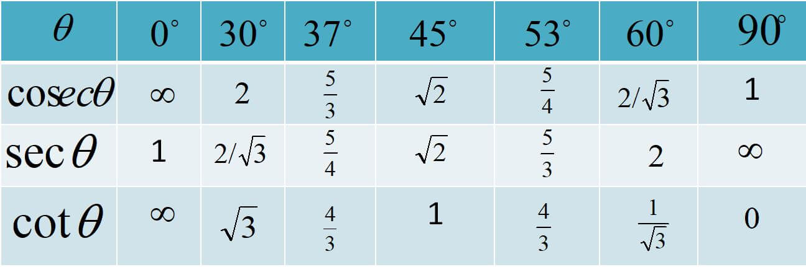
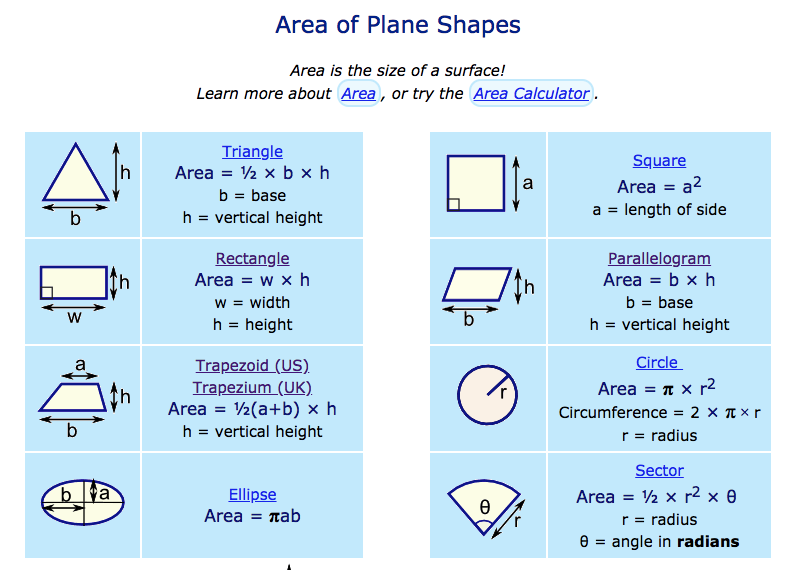
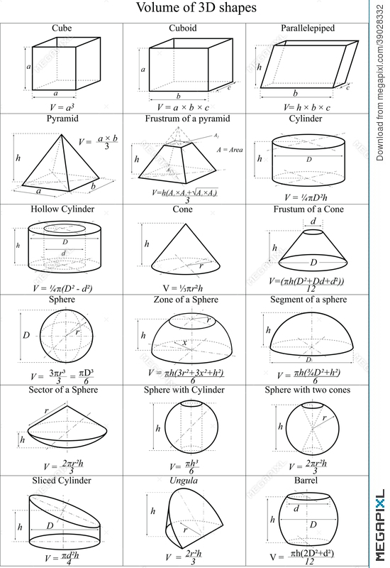

DIFFERENTIATION in mathematics, process of finding the derivative, or rate
of
change, of a
function.
In contrast to the abstract nature of the theory behind it, the practical technique of
differentiation
can be carried out by purely algebraic manipulations,
using three basic derivatives, four rules of operation, and a knowledge of how to manipulate
functions.
The three basic derivatives (D) are:
(1) for algebraic functions, D(xn) = nxn − 1, in which n is any real number;
(2) for trigonometric functions, D(sin x) = cos x and D(cos x) = −sin x;
and (3) for exponential functions, D(ex) = ex.
INTEGRATION
The antiderivative is the name we sometimes, (rarely) give to the operation that goes backward
from the derivative of a function to the function itself.
Since the derivative does not determine the function completely
(you can add any constant to your function and the derivative will be the same),
you have to add additional information to go back to an explicit function as anti-derivative.
Thus we sometimes say that the antiderivative of a function is a function plus an arbitrary constant.
Thus the antiderivative of \cos xcosx is (\sin x) + c(sinx)+c.
The more common name for the antiderivative is the indefinite integral.
This is the identical notion, merely a different name for it.
A wavy line is used as a symbol for it.
Thus the sentence "the antiderivative of \cos xcosx is (\sin x) + c(sinx)+c" is usually stated as:
the indefinite integral of \cos xcosx is (\sin x) + c(sinx)+c, and this is generally written as
\int \cos x \; dx = (\sin x) + c
∫cosxdx=(sinx)+c
Actually this is bad notation. The variable xx that occurs on the right is a variable and represents the
argument of the sine function.
The symbols on the left merely say that the function whose antiderivative we are looking for is the
cosine
function.
You will avoid confusion if you express this using an entirely different symbol (say yy) on the left to
denote this.
The proper way to write this is then
\int \cos y \; dy = (\sin x) + c
∫cosydy=(sinx)+c
cosec x = 1/sin x sec x=1/cos x cot x = 1/tan x 
The area of a shape is the “space enclosed within the perimeter or the boundary” of the given shape. We calculate the for different using math .
Volume is the amount of space a 3D shape takes up. You can work out the volume of a shape by multiplying height × width × depth
